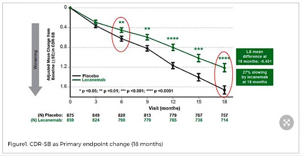

Use common data samples to predict clinical decline over a future, 2-year interval based on the Clinical Dementia Rating (CDR; specifically the sum of boxes score (sobCDR; on a scale of 0 (best score) to 18 (worst score)). sobCDR is a widely-used clinical assessment, also used in clinical trials of anti-dementia drugs such as lecanemab (van Dyck et al., 2022) [e]. The anti-Alzheimer drug, lecanemab, slows the rate of clinical decline over time (green line) in a large cohort of elderly people versus those treated with a placebo (black line) [graph from paper by van Dyck et al., NEJM, 2022]. The drug slowed cognitive decline (18-month change in sobCDR) by 27%, and drastically lowered brain amyloid load by 59 centiloids to 23 (below the PET amyloid positivity threshold). 
There are 3 tasks, using different kinds of input data to predict this decline.
Participants in the challenge can compete on any of these tasks, they do not have to take part in them all.
/Task 1. Only use 3D T1-weighted anatomical brain MRI, a common type of scan collected in hospital and research settings that provides detailed structural information about the brain.
/Task 2.3D T1-weighted MRI and commonly collected demographic data: age, sex, body mass index (BMI), and baseline score on the sobCDR.
/Task 3. 3D T1-weighted MRI, commonly collected demographic data, and extra information that would not universally be available: APOE genotype, educational level, other cognitive assessments, and medical history information collected at multiple time points, such as Height, Weight, BMI, and Blood Pressure. Some of these variables may contain missing values.
Participants will train and test methods using data from 4 widely used study cohorts:
ADNI **add links to the websites explaining these datasets
NACC
OASIS3
A 4th dataset will be disclosed later in the challenge, as an independent test dataset that is not yet public.
The numbers of available datasets are tabulated below:
Participants in the challenge will be asked to predict decline in 2 ways:
/1. Train on 2 cohorts, test on one cohort left out; report R^2 (coefficient of determination between predicted and true values) and MAE (mean absolute error for predicted versus true drop in sobCDR) by cohort, and split into 3 diagnostic groups: control, MCI, and dementia. This test examines how well a trained model generalizes to cohorts it has not seen during training (“out of domain” generalization).
/2. Same but use 5-fold cross-validation, where some data from each cohort is used for training, but one-fifth of each cohort’s data (with groupings specified in the training data) is left out for testing (and cross validation is used to test on a different fifth of the data each time, maintaining independent train and test data). This test still uses test data that the AI methods were not trained on, but test data comes from the same studies (“within domain” generalization).
Challenge participants will be asked to report their results in a standard format, indicating the method used, training data, and the test performance on tasks attempted: report format